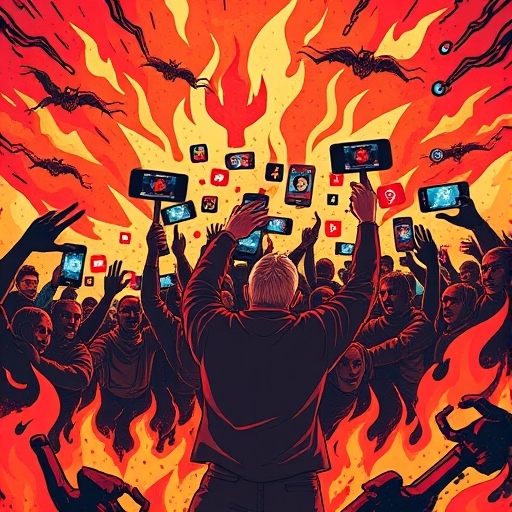

Don't Doomscroll

In recent years, a new term has been coined into our digital vocabulary: "doomscrolling," a tendency to keep your finger on the screen and scroll endlessly through toxic news, such as disturbing updates about natural disasters, political mayhem, economic decline. Though information was always power, platforms like X changed how and when we consume it, curating a ceaseless stream of disturbing content from which many find impossible to disconnect.
So why do we keep scrolling to the evident detriment of our mental health? How do social media algorithms foster such behaviour? This article examines the psychology of doomscrolling, taking the example of X, formerly Twitter, for the purpose.
At its core, doomscrolling is fuelled by the most fundamental aspects of human psychology: an evolutionary bias to notice negative events and ingrain them to memory, something variously called negativity bias. In more primitive times, this instinct helped us to increase our chances of survival by identifying danger and taking action to protect ourselves and our kin. In the absence of mortal danger, now it simply means that we're more attuned to bad news and more likely to fixate upon it.
These inhibitions are blatantly amplified on X because the nature of the platform involves real-time updates on pressing issues. It may feel like a good way to stay informed by scrolling through negative story after negative story, even if it means we must make ourselves experience unnatural amounts of stress and anxiety. The sense of needing to "stay aware" and updated about the events in the world can feel responsible, although it's often at the cost of our mental well-being.
X's business model, much like many social media platforms, relies heavily on user engagement. The longer people are online, the more ads they can see, meaning more data accumulated by X for targeted advertising. This simply incentivizes X to design features that foster addictive behaviour. Algorithms are a good example: they will bring content front and centre that spurs high engagement, often emotionally charged posts designed to elicit strong reactions. This model financially benefits X because the longer spent on the platform, the more ad views there are. Data collected from user behaviours refines personalized content, drawing users in with posts that are inline with their interests. What they might find on the next scroll just might compell the user to return unwittingly to the content cesspool, building on a principle not too different from that in addiction mechanics.
Infinite scroll features allow users to endlessly refresh their feeds with no natural stopping point. This design features real-time updates that will keep users active and make them want to scroll more, especially when the news is breaking. Additionally, X leverages FOMO (Fear of missing out) due to notifications of new tweets or trending topics, which create a psychological effect of needing to catch up with updates. The reason users feel the need to stay "in the loop," so to say, is because X is moving so fast users fear missing major conversations or developments if they aren't checking back regularly.
Like any other social network, the X model also fosters user-generated content by provision for active participation in news cycles and social conversations. The feedback loop of retweets and likes and the possibility of going viral have users continually post, engage, and go back for more as a means of validating themselves. The most negative or sensationalist content is bound to go viral; regardless of whether users are deliberately looking for upsetting news, they are more likely to chance upon it.
X's focus on polarizing content is critical to making users stay longer. Emotionally charged subjects, more so on politics or social issues, drive interaction but are mentally fatiguing. Having to return to the site for either a defence of their ideas in response to opposition or to follow ongoing discussions feeds into X’s engagement metrics and advertising dollars. X allows explicit and graphic content; while it uses content warnings, it rarely removes such content. The presence of graphic violence and pornographic content taps deep into the very essence of addictive behaviours.
Perhaps most troubling of all, children are disproportionately vulnerable on platforms like X, where young users exposed to content beyond their comprehension can have debilitating consequences on their mental and emotional development. Though the terms of service on X clearly outline that users must be at least 13 years old, younger users frequently circumvent that requirement, evident in the fact that teenagers make up a substantial portion of X’s user base.
The different negative effects of doomscrolling on mental health include increased stress, anxiety, and even symptoms of depression due to prolonged exposure to negative news. In putting ourselves into the milieu of bad news continually, a feeling of hopelessness and helplessness is created within us. Consequently, this has gone as far as being termed "headline stress disorder," whereby preoccupation with events worldwide interferes with daily life.
These effects can be amplified on platforms like X, where news is often atomized and in motion. Instead of deeper insight or solutions, doomscrolling tends to overwhelm users with problems. Information is also often presented in a way that amplifies emotional responses, given the very limited space for context that X provides, without providing many ways to understand or process fully.
As the owner of X, Elon Musk holds immense power in determining platform policies and content moderation practices. Although Musk has shown recognition of the ways in which social media has a negative impact on mental health, his approach has been more weighted toward reducing oversight on the platforms and shifting more responsibility to the users themselves. Such an approach is rather hands-off, or laissez-faire which aligns with his philosophical penchant for "free speech absolutism." But in some estimations, this is simply an ideological deflection to protect profits.
The Southport Riots earlier this year prove that, while platforms like X are invaluable for immediate information, they also play a powerful role in shaping public perception and emotional response to crises. Serious contemplation of the accountability of social media companies and the mental health impact of their platforms via legislation is an issue government must consider. Regulators may push Musk and X toward greater accountability measures if X continues to allow unrestricted violent, explicit, and sensational content.